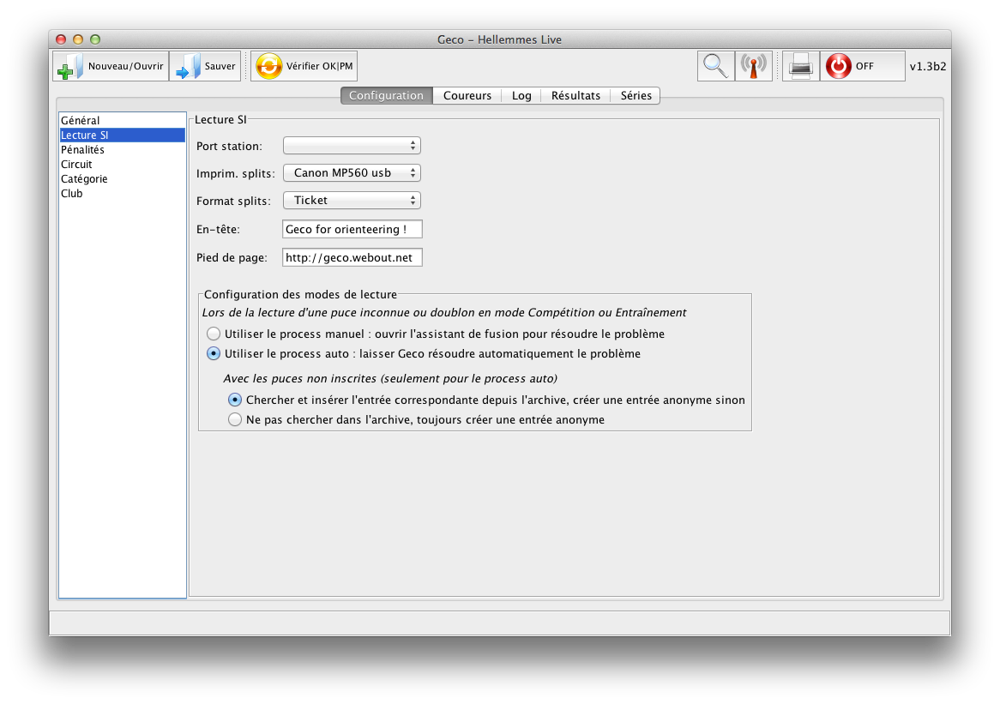
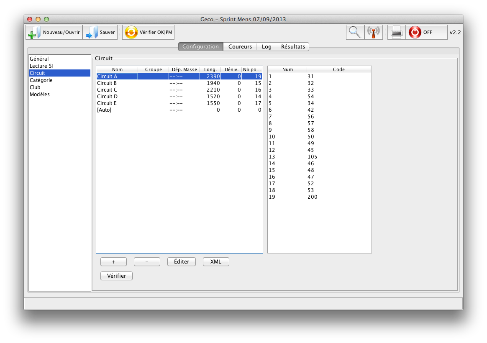

Onglet Configuration
Cet onglet permet de configurer différentes options pour la course. Les options sont groupées par section dans la barre latérale. Sélectionnez une section pour voir les options disponibles dans la fenêtre principale.

(Cliquez pour zoomer)
Général
Lecture SI
- Port : Geco scanne les ports disponibles chaque fois que vous ouvrez la liste
Cette section permet aussi de configurer le comportement de Geco à la lecture des puces (en mode compétition ou entraînement). Vous pouvez choisir de :
- résoudre manuellement les problèmes de puce avec l’assistant de fusion ou laisser Geco prendre en charge automatiquement) toutes les puces, en créant de nouvelles inscriptions au besoin (inscriptions inconnues, doublons)
- laisser Geco chercher les puces inconnues dans l’archive pour créer de nouvelles inscriptions (seulement en automatique)
- restreindre la détection automatique de circuits aux groupes de circuit associés à chaque catégorie
- Limites PM : nombre de postes manquant autorisés avant de marquer le coureur comme PM
- Pas de limite PM : le coureur n’est jamais marqué PM, quelque soit le nombre de postes manquant
- Pénalité : pénalité de temps en secondes par poste manquant (aussi affichée en minutes)
- Pénalité Extra : pénalité de temps par poste hors circuit, en secondes
Circuit
- Geco peut importer des circuits décrits au format IOF XML. Cliquez sur le bouton XML pour sélectionner le fichier de circuits. Vous pouvez choisir entre le format XML V2 (courant) ou le nouveau format XML V3.
- Vous pouvez modifier la longueur et le dénivelé du circuit, l’heure (optionnelle) de départ en masse, ou le groupe du circuit
- Un groupe de circuit est créé à la volée s’il n’existe pas déjà
- Vous pouvez Éditer les circuits à la main, si besoin
- Vous pouvez Revérifier tous les coureurs d’un circuit après changement
Le circuit [Auto] existe par défaut dans Geco : il ne peut pas être renommé ou supprimé. C’est le circuit utilisé par Geco pour toute nouvelle inscription (sauf à utiliser les circuits par catégorie). Ce circuit spécial indique à Geco qu’il faut détecter le véritable circuit lors de la lecture de la puce : après lecture, le circuit du coureur sera automatiquement mis à jour avec le circuit détecté.

Catégorie
- Colonne Circuit : circuit par défaut pour les coureurs de la catégorie (utilisé en particulier pour l’import CSV ou depuis l’archive)
- Colonne Groupe de circuit : restreindre la détection automatique de circuit au groupe de circuit sélectionné pour les coureurs de la catégorie (si option activée dans la lecture SI)
- Vous pouvez importer un modèle CSV avec les catégories courantes et leur circuit associé. Voir le répoertoire
data/modeles pour des exemples de fichiers avec les formats pour courses régionales etc.
Modèles
Cette section permet de choisir les modèles personnalisés Mustache pour l’export (et l’impression) des résultats ainsi que de configurer l’impression des tickets pour les coureurs. Des modèles de base sont fournis dans le dossier formats. À défaut de configurer ces modèles, Geco utilisera les modèles internes par défaut.
Trois modèles sont disponibles pour les résultats de la course : classement, splits et personnalisé (pour exporter les résultats sous un autre format par exemple).
Pour le ticket du coureur, Geco permet de choisir entre un modèle à plusieurs colonnes et un modèle tout en ligne (pour imprimante thermique). L’option Prototypage permet de rapidement modifier les fichiers modèles et de voir le résultat sans gaspiller de papier : Geco ouvre une fenêtre avec le résultat (et écrit un fichier runner_splits.html) au lieu de lancer l’impression du ticket.
{kind=link}
{kind=link}